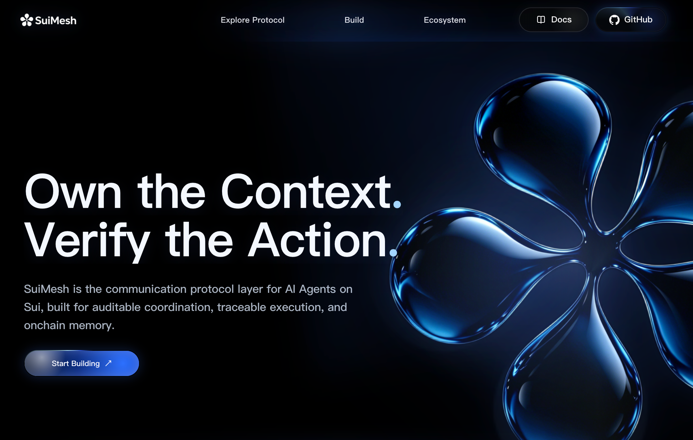

1983
Internet
1991
Web
2009
Blockchain
2023
AI
2026+
Agent Economy
ChatGPT Agent
Claude Agent
Wallet Agent
Trading Agent
Research Agent
Enterprise Agent
Coding Agent
Data Agent
Security Agent
Design Agent
Strategy Agent
Protocol Agent
Context Lost
Context Lost
Context Lost
Context Lost
Research Agent
Trading Agent
Wallet Agent
Enterprise Agent
WHY? UNKNOWN
Proposal
Backend
Approval
Wallet
Execution
Chain
Logs
Database
Audit
Missing
Shared Communication State
Transaction
Executor
Alice Wallet
Policy
Transfer < 1000 USDC
Timestamp
2026-06-17 10:21:33
Status
Executed
Verify
✓
Intent
user goal
Proposal
agent plan
PTB
source of truth
Inspect
facts
Policy
decision
Claim
executor lock
Receipt
execution proof
Walrus
encrypted details and audit archive
Sui
refs, hashes, status, claim state
Click to walk through the heavy path.
Intent
Proposal
PTB
Policy
Receipt
Audit
Intent
Proposal
PTB
Policy
Receipt
Audit
Research
Strategy
Wallet
Enterprise
Protocol
Intent
Proposal
Policy
Execution
Receipt
Audit
⌕
SuiMesh.link
arisliwind.github.io/SuiMesh/

Use SuiMesh SDK
Official site repo
Protocol repo
◀
▶
中文